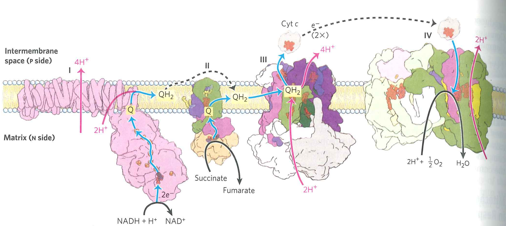
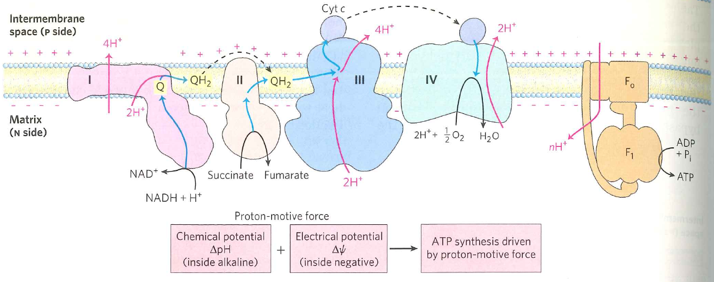
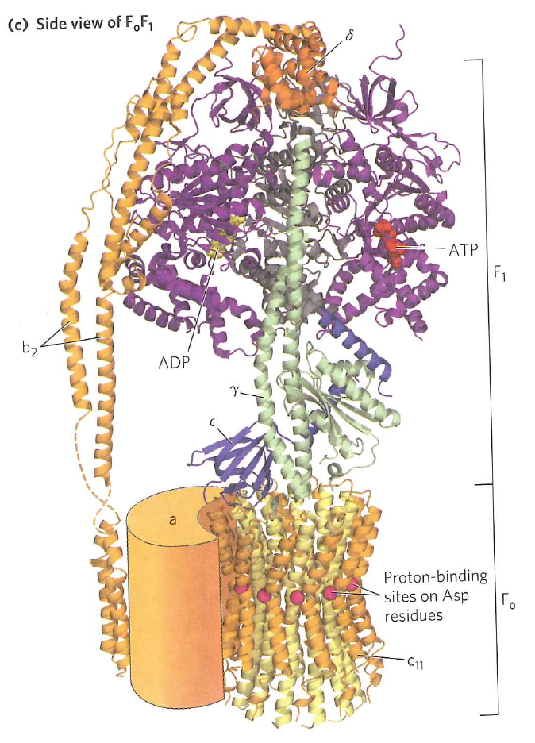
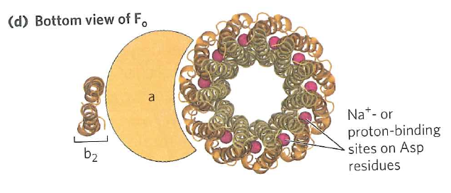
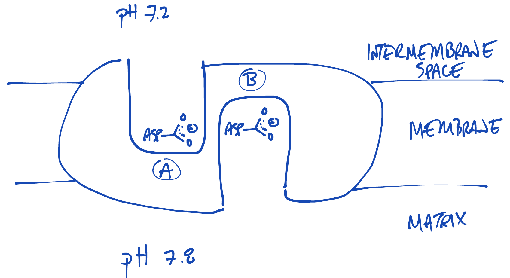

Oxidative phosphorylation overview:
What do we do with the proton gradient?
How does a hydroelectric dam generate electricity?
This is how an ATP synthase works energetically
This is NOT how this protein works mechanically
...even if it looks like itHow does ATP synthase generate ATP?
ATP synthase is mechanical but not inertial. Protons don't "push" on turbine; $F_{1}$ does not "mash" $ADP$ and $P_{i}$ into $ATP$.
Outline:
How is energy stored in the $pH$ gradient between the matrix and the inter membrane space?
$\Delta G$ = concentration + electrical potential
Concentration: Matrix $pH=7.8$; IMS $pH=7.15$
Electrical potential: $\Delta \psi = 0.170\ V$
$\Delta G = RTln \Big ( \frac{[H^{+}]_{out}}{[H^{+}]_{in}} \Big ) + ZF \Delta \psi$
$\Delta G = 0.0083 \times 300 \times ln \Big ( \frac{10^{-7.15}}{10^{-7.8}} \Big ) + 1 \times 96 \times 0.17$
$\Delta G = 20.1 \ kJ \cdot mol^{-1}$
Outline:
The $F_{0}$ subunit consists of 10 identical subunits arranged in a circle
The $F_{0}$ subunit consists of 10 identical subunits arranged in a circle
Which aspartic acid will be more protonated?
Would a protonated Asp or de-protonated Asp more easily cross a membrane bilayer?
Protonated. A protonated Asp is uncharged ($RCOOH$) while a deprotonated Asp is charged ($RCOO^{-} + H^{+}$)
Asp exposed to intermembrane space side protonates more than Asp exposed to matrix side
Protonated Asp enters bilayer more easily than deprotonated Asp
Brownian motion kicks protonated Asp "forward" more of than deprotonated Asp "backward"
Result is net forward motion
You can see this with a microscope. If you attach a flourescent actin polymer to ATPase, it spins
Outline:
$F_{1}$ consists of three $\alpha \beta$ dimers
Each $\alpha \beta$ dimer can be in either $O$, $L$, or $T$ states (bizarre names just like $T$ and $S$ from hemoglobin).
System is cooperative. At all times, one subunit must be in $O$, one must be in $L$, one must be in $T$
Shaft connecting to $F_{0}$ ($\gamma$) is asymmetrical and stabilizes the $O$ state when bound
As $F_{0}$ spins, $\gamma$ pushes each subunit sequentially through $O \rightarrow L \rightarrow T$
How does this rotation lead to ATP synthesis?
$O$ has high affinity for $ADP$ and $P_{i}$ individually
$L$ brings $ADP$ and $P_{i}$ into close proximity
$T$ has high affinity for $ATP$. The $L \rightarrow T$ transition catalyzes formation of $ATP$
How do we get $ATP$ off?
$O$ state has low affinity for ATP
Each $120^{\circ}$ turn of $F_{0}$ pushes the $\alpha \beta$ dimers through one step of the cycle
This process yields (at max) $3 ATP$ per 10 protons
Electron transport moved 10 protons for 1 NADH
Max yield is thus 3 ATP per NADH.
With various inefficiencies, this is about ~2.5 ATP/NADH
Outline: